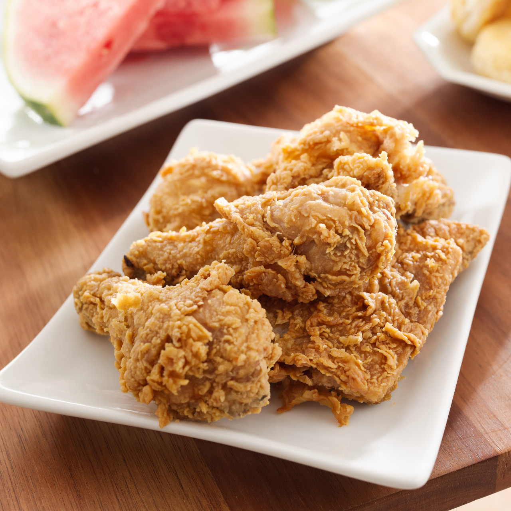

Return to home page
Fried Chicken

A dish that your whole family will enjoy!
When we came back from our trip to Pakistan, what we most missed was this delicious and popular recipe we used to find everywhere there.
The first time we tried it back home, it was not as good as we remembered. With some adjustments given by our dear Pakistani friends and
a few couple tries, we finally nailed that amazing flavor we're about to share with all of you.
Ingredients
-
1 (3 pound) whole chicken, cut into pieces
-
2 cups crushed corn flakes
-
1/4 teaspoon garlic salt
-
1/4 teaspoon ground black pepper
-
1/4 teaspoon paprika
-
1 egg, beaten
-
2 cups vegetable oil, for frying
Steps
-
Rinse chicken pieces in cold water and pat dry with paper towels.
-
Mix the corn flakes, garlic salt, pepper and paprika in a shallow dish. Dip the chicken pieces in the egg then roll in the corn flakes mixture.
-
Heat oil in a non-stick skillet to 350 degrees F (175 degrees C).
-
Place chicken pieces in the hot skillet and cook until internal temperature of the leg reaches 165 degrees F (74 degrees C) and the juices run clear.